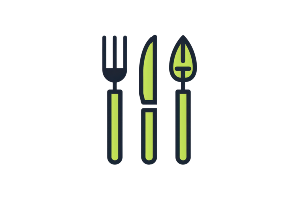

<nav class="navbar">
  <div class="navbar-brand" (click)="goToCatalog()" style="cursor: pointer;">
    
    <span>Utal Eats</span>
  </div>
  
  <!-- Botón de usuario -->
  <div class="user-dropdown" *ngIf="shouldShowMenu()">
    <button (click)="toggleUserMenu()" class="user-button">
      <svg xmlns="http://www.w3.org/2000/svg" width="24" height="24" viewBox="0 0 24 24" fill="none" stroke="currentColor" stroke-width="2" stroke-linecap="round" stroke-linejoin="round">
        <path d="M20 21v-2a4 4 0 0 0-4-4H8a4 4 0 0 0-4 4v2"></path>
        <circle cx="12" cy="7" r="4"></circle>
      </svg>
      <span>{{ userName || 'Usuario' }}</span>
    </button>
    
    <!-- Menú desplegable -->
    <div class="dropdown-content" [class.show]="showUserMenu">
      <a (click)="viewOrders()">
        <svg xmlns="http://www.w3.org/2000/svg" width="18" height="18" viewBox="0 0 24 24" fill="none" stroke="currentColor" stroke-width="2" stroke-linecap="round" stroke-linejoin="round">
          <path d="M6 2L3 6v14a2 2 0 0 0 2 2h14a2 2 0 0 0 2-2V6l-3-4z"></path>
          <line x1="3" y1="6" x2="21" y2="6"></line>
        </svg>
        Mis Pedidos
      </a>
      <a (click)="logout()">
        <svg xmlns="http://www.w3.org/2000/svg" width="18" height="18" viewBox="0 0 24 24" fill="none" stroke="currentColor" stroke-width="2" stroke-linecap="round" stroke-linejoin="round">
          <path d="M9 21H5a2 2 0 0 1-2-2V5a2 2 0 0 1 2-2h4"></path>
          <polyline points="16 17 21 12 16 7"></polyline>
          <line x1="21" y1="12" x2="9" y2="12"></line>
        </svg>
        Cerrar Sesión
      </a>
    </div>
  </div>
</nav>

<div class="container">
  <router-outlet />
</div>